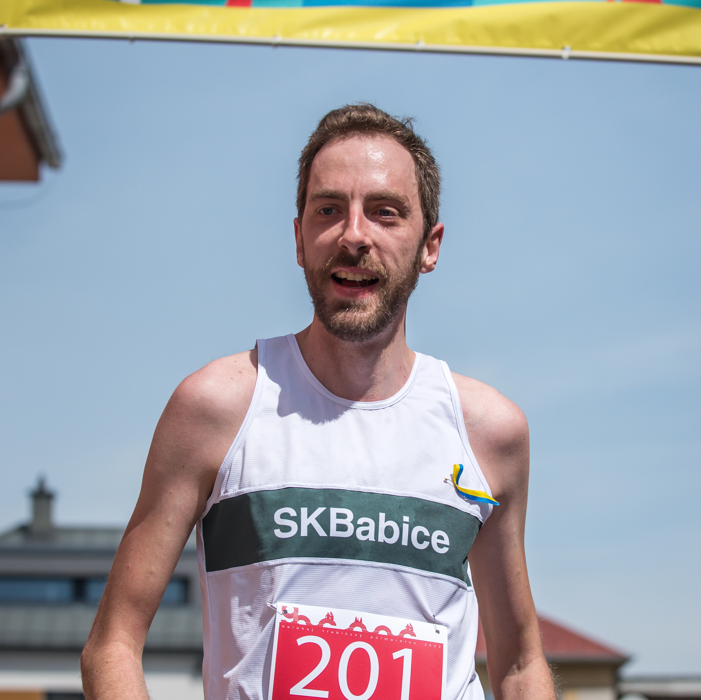
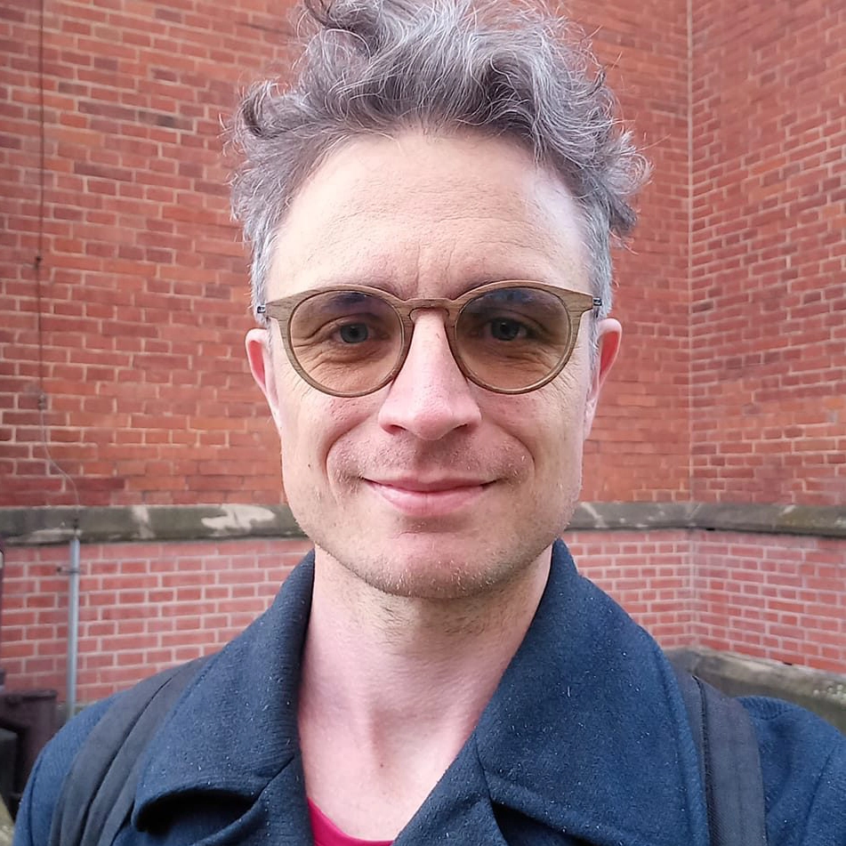
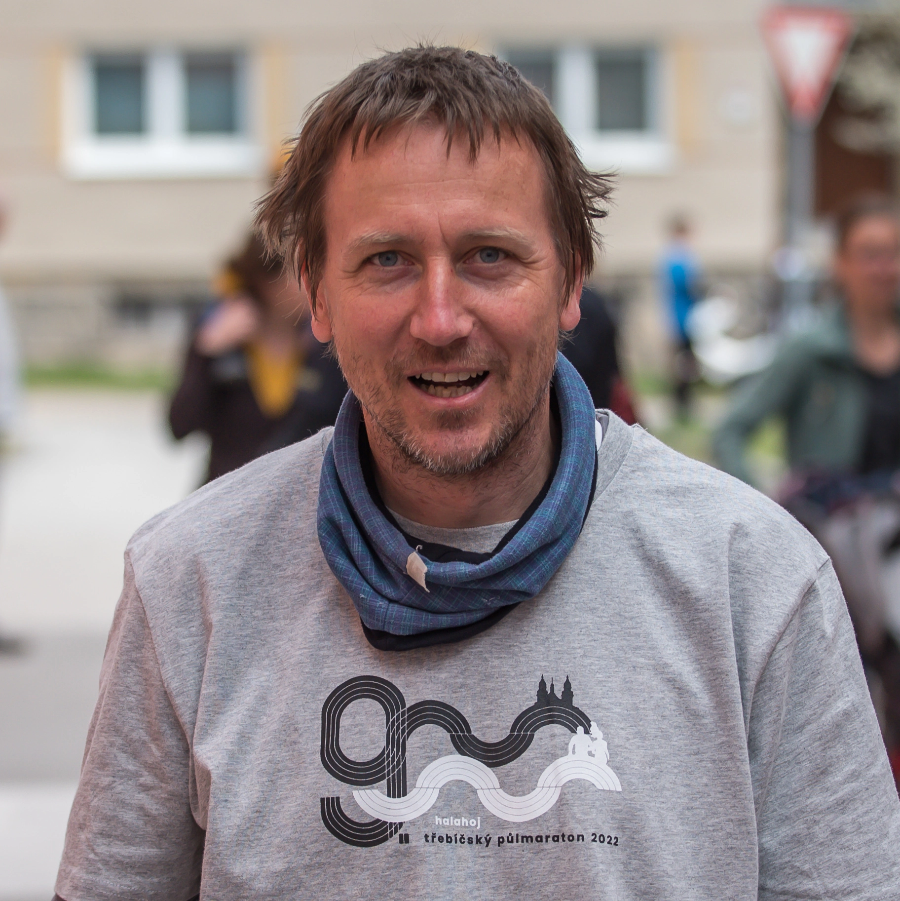
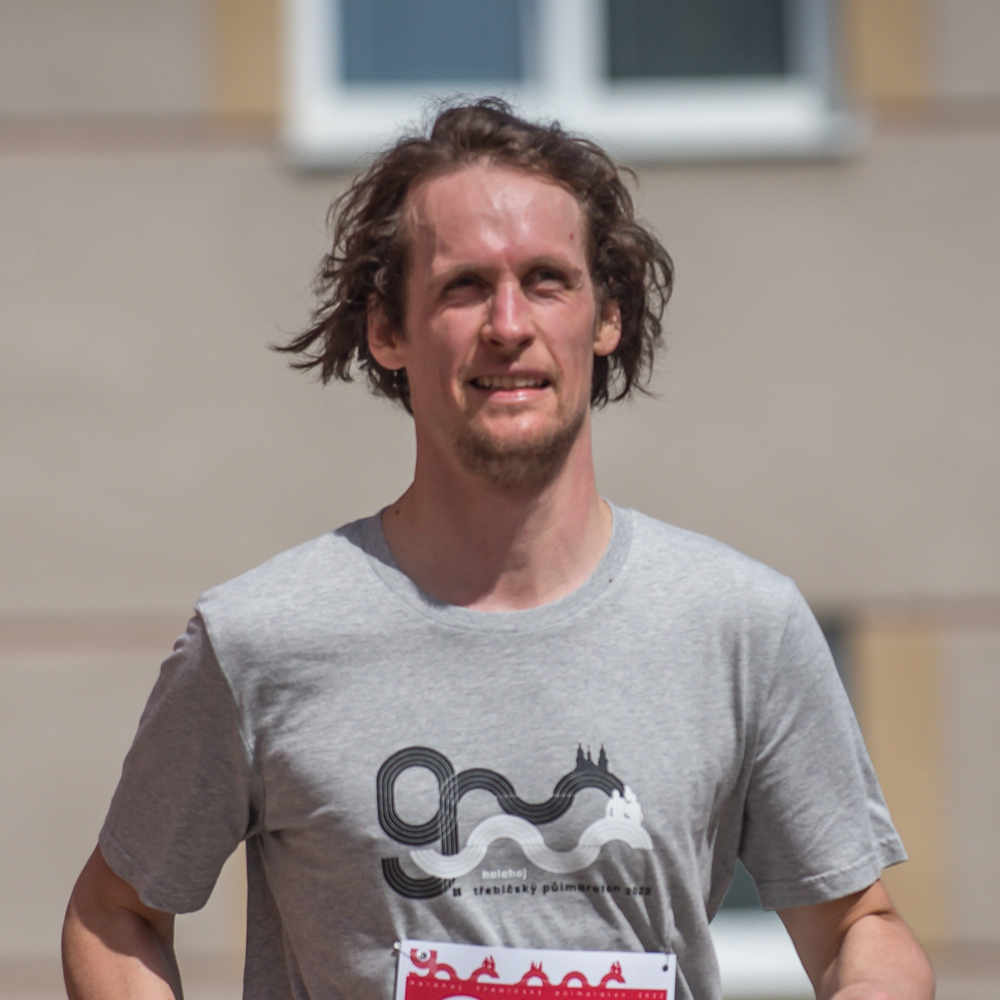
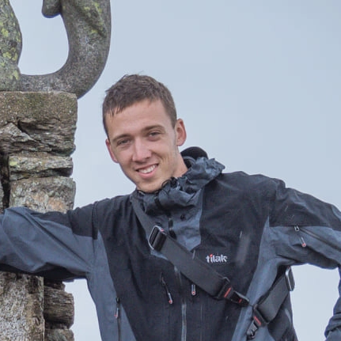

Náš tým


Táda
Ředitel
Běhá, píše, organizuje a nejradši to spojuje všechno dohromady. Půlmaratonské maily, statusy a zprávy na Facebooku vám píše právě on, taky shání ceny a baví se se sponzory. A může za všechno, co se odehraje na Půlmaratonském festiválku.

Ondera
Koordinátor dobrovolníků
Člověk, který rád úkoluje, připomíná a kontroluje, zda je vše okolo půlmaratonského kolotoče na svém místě, každý ví, co a jak má dělat a jak to celé připravit. Sám se soustředí na psaní grantů a komunikaci v nejužším organizačním týmu.

Michal
Papírování a logistika
Běhá rád a běhá rád sám. I když letošní listopadový výběh s vycházejícím sluncem v promrzlé poutní krajině Jemnicka ve skupince s šéfem našeho půlmaratonu Onderou patří k silným (nejen) běžeckým zážitkům. Před závodem oběhává úřady, policii a jiné vstřícné instituce, což už je méně euforické. V samotný den D pak běhá taky, ať už při závodě nebo před ním či po něm, ať už po svých či s pomocí jiných podkapoťáckých koní.

Pisča
Finance
Ač je s Třebíčským půlmaratonem od prvního ročníku jako dobrovolník, tak vlastně moc neběhá. Nejvíc v životě uběhla 2105 m, ale kdo by to počítal, že? Ale to počítání, to jí jde. Od čtvrtého ročníku se stará půlmaratonu o finance, řeší vše od přijatých plateb, přes proplacení posledního banánu až po vybírání vstupného na festiválku. Taky bývá k vidění u registrace, někdy fotí a hlavně má na starost dětský běh, včetně pečení perníkových medailí. Půlmaraton je zkrátka její srdcovka (vzdor tomu, že by ho absolutně neuběhla).

Stopař
Grafika
Kreativní mozek týmu. Pokud se vám líbí náš web, trička, medaile, tašky či diplomy, vězte, že v tom má prsty právě on. V týmu využívá zkušenosti z organizace jiných akcí a přináší nové, neotřelé nápady.

Michal
Materiál a web
Nejmladší člen týmu. Zodpovídá za materiál a hlavně, že vše je tam, kde být má. Před závodem obstarává nákupy.